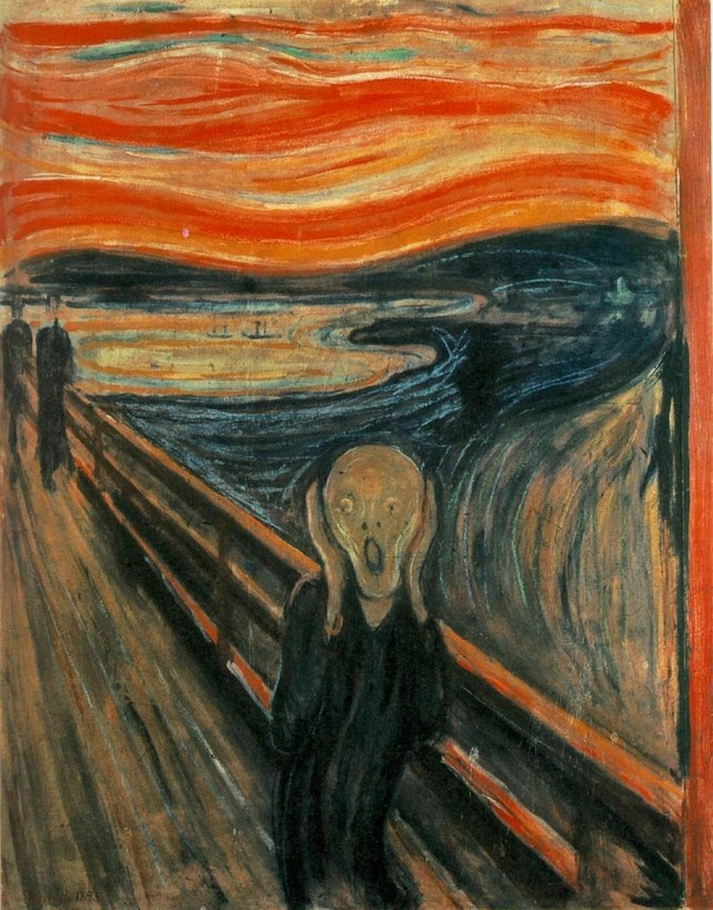
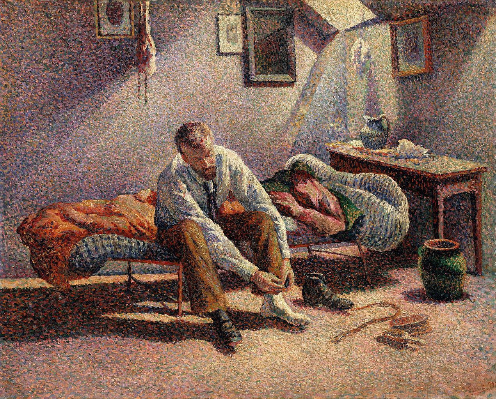

Sunsrise by Monet (1872)
After a long period of realistic painting, artists started to paint based on their feeling, rather than what they purely saw.
Impressionistic paintings often have a very distinct atmosphere about them, like this one by Monet.
Melancholy by Edvard Munch (1894)
Another example of a distinct atmosphere.

The Scream by Edvard Munch (1893)
In this painting, Munch sought to portray that man was lost in this industrialized world; it's not his natural habitat and makes him scream deep down in his soul.
Grainfield by Berthe Morisot (1875)
Made by a female painter from France.
At the Races by Edgar Degas (1877-80)
Besides a heavy focus on emotions, impressionism is often connotated with lighter colors and looser brushstrokes.
The Setting Sun by Armand Guillaumin (1887)
Another hallmark of Impressionism are paintings 'en plein air' (under the open sky / to paint outdoors) to paint exactly where the subject is situated.

Morning, Interior by Maximilien Luce (1890)
Pointulism is an off-shoot of Impressionism. In this artstyle, a huge amount of tiny dots or brushstrokes create a whole.
Self-portrait by Vincent Van Gogh (1887)
Antoher example of Pointulism is this self-portrait of Van Gogh.
Close to the end of Van Gogh's life, his friend inspired him to focus on impressionism. This work is one of its manifestations.